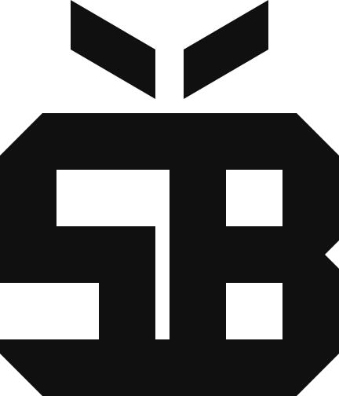

INDEPENDENT THINKING. CONNECTED TECHNOLOGY.
Fresh ideas.Solid tech.
From the first sketch to the systems behind it, we make technology feel clear, useful and full of possibility.
DESIGN / DEVELOPMENT / CLOUD / AUTOMATION / IT
SQ—01 / THE SQUARE BERRY[ SB ]ROOTED IN LOGIC.GROWN WITH IMAGINATION.

INDEPENDENT THINKING. CONNECTED TECHNOLOGY.TAKE A LOOK ↓